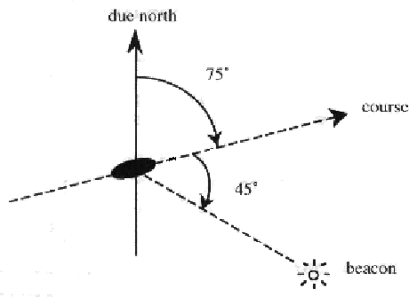
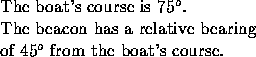
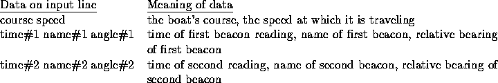

| Radio Direction Finder |
A boat with a directional antenna can determine its present position with the help of readings from local beacons. Each beacon is located at a known position and emits a unique signal. When a boat detects a signal, it rotates its antenna until the signal is at maximal strength. This gives a relative bearing to the position of the beacon. Given a previous beacon reading (the time, the relative bearing, and the position of the beacon), a new beacon reading is usually sufficient to determine the boat's present position. You are to write a program to determine, when possible, boat positions from pairs of beacon readings.
For this problem, the positions of beacons and boats are relative to a
rectangular coordinate system. The positive x-axis points east; the positive
y-axis points north. The course is the direction of travel of the boat and
is measured in degrees clockwise from north. That is, north is 0  , east is
90
, east is
90  , south is 180
, south is 180  , and west is 270
, and west is 270  . The relative bearing of a beacon is
given in degrees clockwise relative to the course of the boat. A boat's
antenna cannot indicate on which side the beacon is located. A relative
bearing of 90
. The relative bearing of a beacon is
given in degrees clockwise relative to the course of the boat. A boat's
antenna cannot indicate on which side the beacon is located. A relative
bearing of 90  means that the beacon is toward 90
means that the beacon is toward 90  or 270
or 270  .
.
 
The input consistes of several datasets. The first line of each dataset is an integer specifying the number of beacons (at most 30). Following that is a line for each beacon. Each of those lines begins with the beacon's name (a string of 20 or fewer alphabetic characters), the x-coordinate of its position, and the y-coordinate of its position. These fields are single-space separated.
Coming after the lines of beacon information is an integer specifying a number of boat scenarios to follow. A boat scenario consists of three lines, one for velocity and two for beacon readings.

All times are given in minutes since midnight measured over a single 24-hour period. The speed is the distance (in units matching those on the rectangular coordinate system) over time. The second line of a scenario gives the first beacon reading as the time of the reading (an integer), the name of the beacon, and the angle of the reading as measured from the boat's course. These 3 fields have single space separators. The third line gives the second beacon reading. The time for that reading will always be at least as large as the time for the first reading.
For each scenario, your program should print the scenario number (Scenario 1, Scenario 2, etc.) and a message indicating the position (rounded to 2 decimal places) of the boat as of the time of the second beacon reading. If it is impossible to determine the position of the boat, the message should say ``Position cannot be determined." Sample input and corresponding correct output are shown below.
4 First 2.0 4.0 Second 6.0 2.0 Third 6.0 7.0 Fourth 10.0 5.0 2 0.0 1.0 1 First 270.0 2 Fourth 90.0 116.5651 2.2361 4 Third 126.8699 5 First 319.3987 4 First 2.0 4.0 Second 6.0 2.0 Third 6.0 7.0 Fourth 10.0 5.0 1 0.0 1.0 1 First 270.0 2 Fourth 90.0
Scenario 1: Position cannot be determined Scenario 2: Position is (6.00, 5.00) Scenario 3: Position cannot be determined